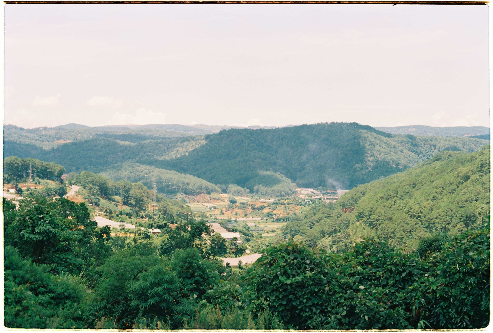
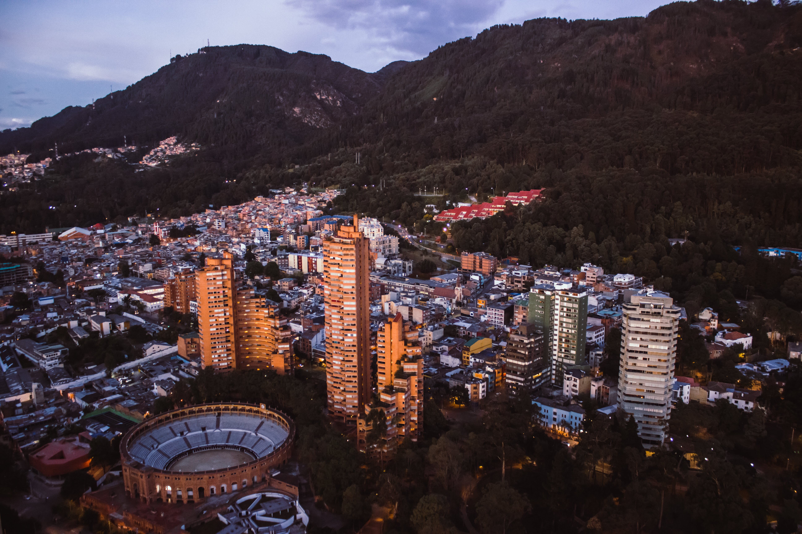
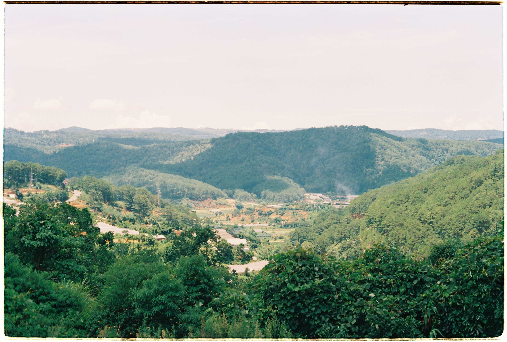
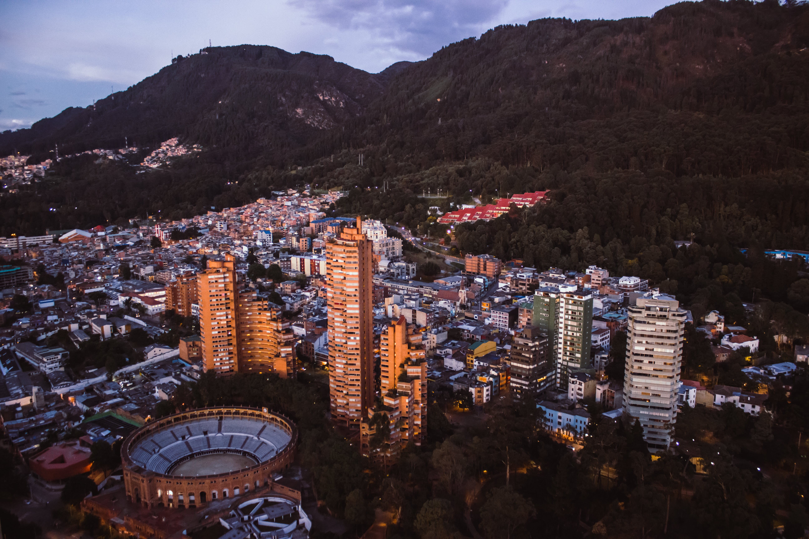

Visiting Colombia
Colombia is a country that has transcended its tumultuous past to become a vibrant destination offering diverse landscapes and warm hospitality. From the lush Amazon rainforest to the vibrant city life of Bogotá, each region provides a unique experience. Colombia is also famous for its coffee, and a visit to the coffee plantations offers an insight into the intricate process of coffee production. The Caribbean coast with its white sandy beaches and the historic walled city of Cartagena add to the country's allure
Cartagena: A UNESCO World Heritage site, Cartagena's walled city boasts colorful colonial architecture, lively streets, and a rich history.
Tayrona National Natural Park: This coastal park combines lush jungles with pristine beaches, offering a perfect blend of relaxation and adventure.
Medellín: Once infamous for its drug cartels, Medellín has transformed into a dynamic city known for innovation, art, and a scenic cable car network.
Cocora Valley: Famous for its towering wax palms, Cocora Valley provides a stunning backdrop for hiking and horseback riding.
Bogotá: Colombia's capital, Bogotá, is a bustling metropolis with cultural treasures like the Gold Museum and the historic La Candelaria distric
San Agustín Archaeological Park: Explore ancient pre-Columbian statues and tombs in this archaeological site surrounded by lush landscapes.

 


